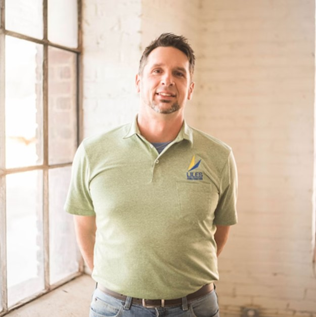

David Nickel
Name: David Nickel
Title: Project Manager
Professional Memberships, Credentials and Registrations: Associated Builders and Contractors Construction Site Supervisor Training Program 28hr, NSC First Aid & CPR, Teaching Certificate - State of Pennsylvania and North Carolina, not active
Education: BS in Art Education, Edinboro University of Pennsylvania
More about David: Known as “the Art Teacher” (because he was one in Cabarrus County), David is married to Alisha and has one stepson, a son and a daughter, as well as a 16-year-old Rat Terrier. In his free time, he enjoys mountain biking, community service, and creating art.